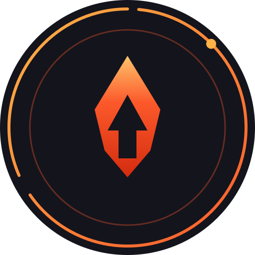
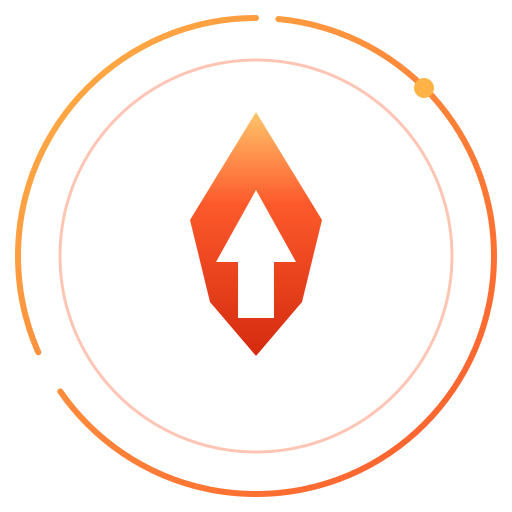
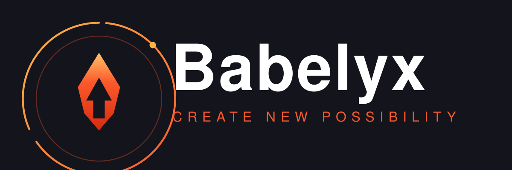
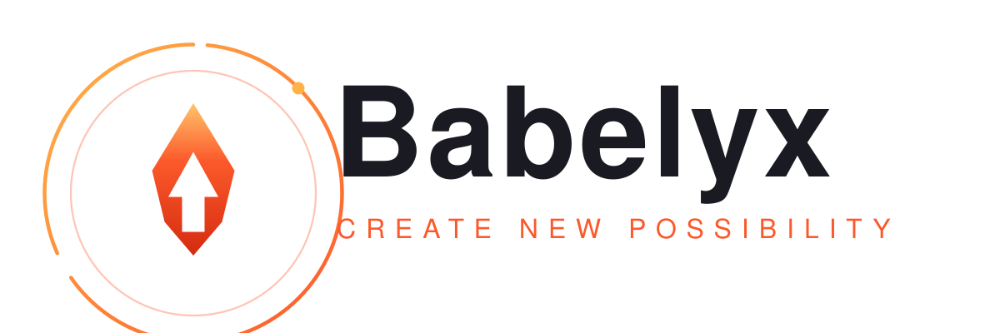

APP 图标 · 深空底

APP 图标 · 浅底

横版 LOCKUP · 深底

横版 LOCKUP · 浅底

设计说明 ·「恒焰」
· 多面火苗：六边形切面宝石造型，红橙渐变（#FFC46B → #FC592B → #D42B0F），呼应品牌火苗按钮「创造」与 NFT 的 gem 质感，比旧版圆弧火炬更硬朗。
· 负空间上升箭头：火苗中空处藏一支向上的箭头，创作上行、价值升职，也是「新可能」的方向感。
· 双轨道环：外环顶部留缺口并缀一枚节点 —— IPFS 分布式节点 + 「巴贝历」的周期循环；内环为低透明账本层，暗示区块链账本与永存（permanent existence）。
· 字体：几何无衬线（Avenir Next / Futura 一族），字距拉开，保持加密品牌的克制感；slogan 用主色 #FC592B。